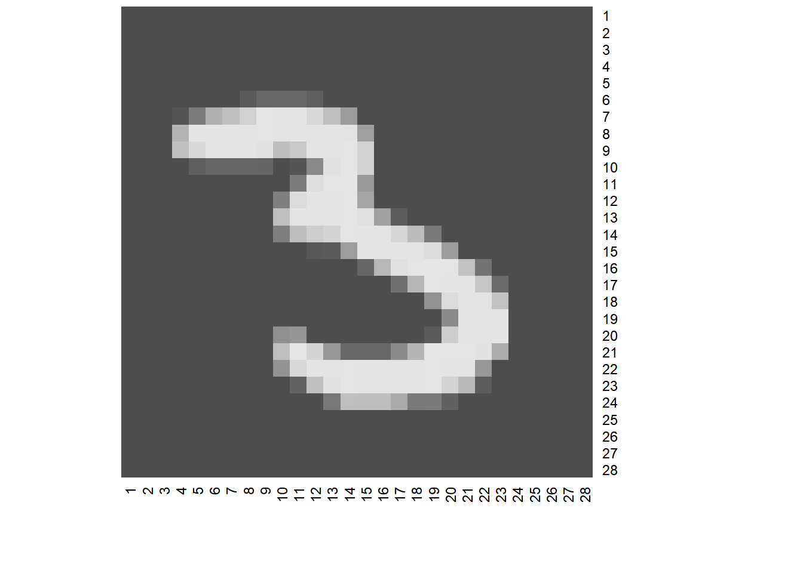
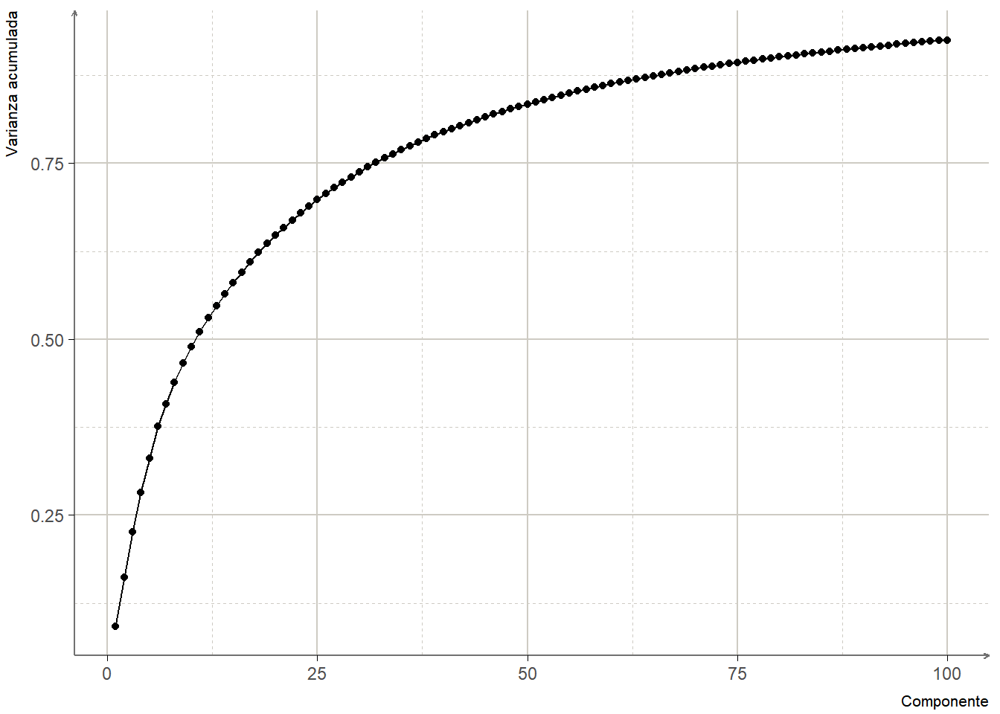
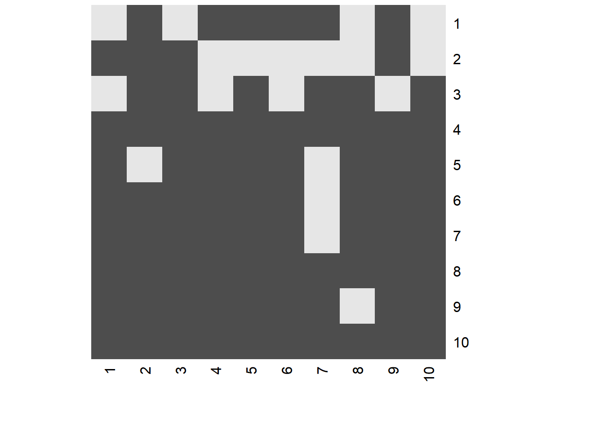

Capítulo 13 Análisis de Componentes Principales
13.1 Introducción
Supongamos que tenemos un conjunto de datos en \(\mathbb{R}^p\) y que queremos visualizarlos. Si \(p\) es muy grande no podremos visulizar todo el conjunto con un solo gráfico, una manera de visualizar los datos es hacer gráficos de dsipersión de dos dimensiones.
Sin embargo la cantidad de gráficos de dos dimensiones que podemos hacer son \(p(1-p)/2\). Lo cual vuelve la tarea compleja conforme el valor de \(p\) aumenta.
Lo que nos gustaría es poder encontrar una representación de los datos con menos dimensiones pero que conserva la mayor cantidad de información posible.
El análisis de componentes principales es una herramienta que nos permitirá lograr eso, enocntrar representaciones en menos dimensiones que conserven la mayor cantidad de varianza.
13.2 Los componentes principales
Los componentes principales de un conjunto de datos en \(\mathbb{R}^p\) son una serie de combinaciones lineales de rango \(q \leq p\) que, colectivamente, explican la mayoría de la varianza original.
Si denotamos las observaciones por \(x_1, x_2, \dots, x_n\), sea \[f(\lambda) = \mu+V_q\lambda\] el modelo lineal de rango \(q\) que las representa; esta ecuación es la representación paramétrica de un hiperplano afín de rango \(q\).
Si resolvemos el problema que nos permita encontrar el plano afín que minimice el error de reconstrucción: \[min_{\mu,\lambda_i,V_q} \sum_{i=1}^N ||x_i-\mu -V_q\lamda_i||^2\] obtenemos
\[\hat{\mu}=\bar{x}\]
\[\hat{\lambda}_i=V_q^T(x_i-\bar{x})\]
Con lo cual debemos encontrar la matriz ortogonal \(V_q\) tal que:
\[min_{V_q}\sum_{i=1}^N||x_i-\bar{x}-V_q V_q^T(x_i-\bar{x})||^2\]
Por facilidad, asumimos que \(\bar{x}=0\). En caso contrario centramos las variables para tener media cero.
Entoncesla matriz \(H_q = V_q V_q^T\) es una matriz de proyección que mapea cada punto \(x_i\) en su reconstrucción \(H_q x_i\) que es la proyección ortogonal de \(x_i\) en el subespacio generado por las columnas de \(V_q\)
La solución puede ser expresada como:
\[\begin{equation} X = UDV^T \tag{13.1} \end{equation}\]
esto es, la descomposicion en valores singulares de \(X\) donde:
\(U\) es una matriz ortogonal de \(N\times p\) cuyas columnas llamamos valores singulares izquierdos
\(V\) es una matriz ortogonal de \(p\times p\) cuyas columnas llamamos valores singulares derechos
\(D\) es una matriz diagonal de \(p \times p\) cuyos elementos cumplen \(d_1\geq d_2\geq \dots \geq d_p\geq 0\) llamados valores singulares
A las columnas de \(UD\) las llamamos componentes principales de \(X\)
El primer componente principal está dado por la combinación lineal normalizada de las columnas de los datos originales cuya varianza es máxima:
\[Z_1 = \phi_{11}X_1+\phi_{21}X_2+ \dots+\phi_{p1}X_p\] N.B. \(\sum_{j=1}^p\phi_{j1}^2=1\)
A los valores \(\phi_{j1}\) los llamamos pesos del primer componente principal. Éstos tienen la restricción de que su suma debe ser igual a uno para evitar que el primer componente tenga varianza arbitraria.
13.3 Interpretación geométrica
Para el primer componente principal, \(\phi_1\) define la dirección en el espacio para la cual los datos presentan mayor variación.
El segundo componente principal es aquella combinación lineal ortogonal al primer componente que tenga máxima varianzay aspi sucesivamente con el resto de componentes.
Los scores de los componentes principales son las proyecciones de los datos en las direcciones descritas por \(\phi_i\)
13.4 Consideraciones
13.4.1 Escalamiento de variables
Los resultados del análisis de componentes principales serán distintos si las variables no se centran (media cero) e incluso serán distintos si éstas se escalan individualmente.
Las diferencias en los resultados están ligadas directamente con la escala en la que estén medidas las diferentes variables del conjunto de datos.
Consideremos por ejemplo los datos USArrests, en este conjunto las variables Murder, Rape y Assault están medidas como ocurrencia por cada 100,000 habitantes y UrbanPop como porcentaje de población, en este sentido, si analizamos las varianzas:
## $Murder
## [1] 18.97047
##
## $Assault
## [1] 6945.166
##
## $UrbanPop
## [1] 209.5188
##
## $Rape
## [1] 87.72916veremos que Assault tiene la varianza más grande lo cual causará si no escalaramos los datos, que el primer componente tengo un peso muy grande para esta variable.
Para evitar que los componentes principales dependan de la escala o de la elección de algún factor de escala deberemos transformar las variables para que tengan desviación estandar unitaria antes de aplicar el algoritmo de componentes principales.
N.B. Si las variables fueron medidas en la misma escala entonces no es necesario aplicar ninguna transformación.
13.4.2 Varianza explicada por los componentes principales
La varianza total del conjunto de datos está dada por \[\sum_{j=1}^pVar(X_j)=\sum_{j=1}^p\frac{1}{n}\sum_{i=1}^{n}x_{ij}^2\]
La varianza explicada por el m-ésimo componente principal es \[\frac{1}{n}\sum_{i=1}^n(\sum_{j=1}^p\phi_{jm}x_{ij})^2\]
Y la proporción de varianza explicada por el m-ésimo componente es \[\frac{\sum_{i=1}^n(\sum_{j=1}^p\phi_{jm}x_{ij})^2}{\sum_{j=1}^p\sum_{i=1}^nx_{ij}^2}\]
13.4.3 Número de componentes a usar
De manera general, un conjunto de datos n-dimensional tiene \(min(n-1,p)\) componentes principales distintos. Sin embargo, dado que no típicamente usaremos este análisis para reducir la dimensión de los datos no estamos interesados en usarlos todos.
De hecho lo que buscamos es el menor número de componentes que nos permitan capturar una buena cantidad de información.
Para encontrar este número de componentes no existe una respuesta única. Comúnmente usaremos como ayuda el screeplot o gráfica de codo de la varianza del m-ésimo componente principal y escogeremos la cantidad que nos permita capturar ya sea cierta cantidad de varianza e.g. el 70% de ella o bien aquel número de componentes a partir del cual el incremento de varianza por cada componente adicional sea marginal.

13.5 PCA en R
Usaremos datos de números escritos a mano para reducir las dimensiones.
El conjunto de datos tiene información sobre 784 pixeles para 1000 números.
un_numero <- matrix(as.matrix(digitos[315,]), ncol = 28, byrow = TRUE)
heatmap(x = un_numero, Colv = NA, Rowv = NA, revC = T, scale = "none", col = grey.colors(1000))
Cada número consta de 784 pixels, la idea es reducir la dimensión de los número para representarlo con una menor cantidad de ellos.
## Importance of first k=100 (out of 784) components:
## PC1 PC2 PC3 PC4 PC5
## Standard deviation 561.86766 490.76826 468.37392 440.74081 408.35793
## Proportion of Variance 0.09178 0.07002 0.06377 0.05647 0.04848
## Cumulative Proportion 0.09178 0.16179 0.22557 0.28204 0.33052
## PC6 PC7 PC8 PC9 PC10
## Standard deviation 397.26889 330.06467 323.24940 309.72557 280.48302
## Proportion of Variance 0.04588 0.03167 0.03038 0.02789 0.02287
## Cumulative Proportion 0.37640 0.40807 0.43845 0.46633 0.48920
## PC11 PC12 PC13 PC14 PC15
## Standard deviation 270.46930 260.12743 244.82230 242.63829 231.37822
## Proportion of Variance 0.02127 0.01967 0.01742 0.01712 0.01556
## Cumulative Proportion 0.51047 0.53014 0.54757 0.56468 0.58024
## PC16 PC17 PC18 PC19 PC20
## Standard deviation 226.88223 221.91522 217.69853 205.86651 204.0297
## Proportion of Variance 0.01496 0.01432 0.01378 0.01232 0.0121
## Cumulative Proportion 0.59521 0.60953 0.62330 0.63562 0.6477
## PC21 PC22 PC23 PC24 PC25
## Standard deviation 194.69877 191.20772 184.5454 183.85717 176.70210
## Proportion of Variance 0.01102 0.01063 0.0099 0.00983 0.00908
## Cumulative Proportion 0.65875 0.66937 0.6793 0.68910 0.69818
## PC26 PC27 PC28 PC29 PC30
## Standard deviation 174.51903 166.72761 165.20845 161.50046 157.06771
## Proportion of Variance 0.00885 0.00808 0.00793 0.00758 0.00717
## Cumulative Proportion 0.70703 0.71511 0.72305 0.73063 0.73780
## PC31 PC32 PC33 PC34 PC35
## Standard deviation 154.11878 151.7943 146.20414 141.49294 140.80434
## Proportion of Variance 0.00691 0.0067 0.00621 0.00582 0.00576
## Cumulative Proportion 0.74471 0.7514 0.75762 0.76344 0.76920
## PC36 PC37 PC38 PC39 PC40
## Standard deviation 135.72952 135.17497 133.28084 131.86642 126.22832
## Proportion of Variance 0.00536 0.00531 0.00516 0.00506 0.00463
## Cumulative Proportion 0.77456 0.77987 0.78504 0.79009 0.79472
## PC41 PC42 PC43 PC44 PC45
## Standard deviation 124.33321 121.16178 120.96106 118.47836 117.96289
## Proportion of Variance 0.00449 0.00427 0.00425 0.00408 0.00405
## Cumulative Proportion 0.79922 0.80349 0.80774 0.81182 0.81586
## PC46 PC47 PC48 PC49 PC50
## Standard deviation 114.3650 113.71241 111.81485 110.84387 108.59844
## Proportion of Variance 0.0038 0.00376 0.00363 0.00357 0.00343
## Cumulative Proportion 0.8197 0.82343 0.82706 0.83063 0.83406
## PC51 PC52 PC53 PC54 PC55
## Standard deviation 107.67339 103.86519 102.76554 101.25518 100.63854
## Proportion of Variance 0.00337 0.00314 0.00307 0.00298 0.00294
## Cumulative Proportion 0.83743 0.84057 0.84364 0.84662 0.84956
## PC56 PC57 PC58 PC59 PC60
## Standard deviation 99.32478 97.46050 96.11925 93.50884 93.43295
## Proportion of Variance 0.00287 0.00276 0.00269 0.00254 0.00254
## Cumulative Proportion 0.85243 0.85519 0.85788 0.86042 0.86296
## PC61 PC62 PC63 PC64 PC65 PC66
## Standard deviation 91.23502 89.83818 88.8591 86.9524 85.36302 84.59068
## Proportion of Variance 0.00242 0.00235 0.0023 0.0022 0.00212 0.00208
## Cumulative Proportion 0.86538 0.86772 0.8700 0.8722 0.87434 0.87642
## PC67 PC68 PC69 PC70 PC71
## Standard deviation 83.24666 82.9586 81.89783 81.24899 79.89416
## Proportion of Variance 0.00201 0.0020 0.00195 0.00192 0.00186
## Cumulative Proportion 0.87843 0.8804 0.88238 0.88430 0.88616
## PC72 PC73 PC74 PC75 PC76
## Standard deviation 79.00510 77.63465 77.28005 75.78120 75.20461
## Proportion of Variance 0.00181 0.00175 0.00174 0.00167 0.00164
## Cumulative Proportion 0.88797 0.88972 0.89146 0.89313 0.89477
## PC77 PC78 PC79 PC80 PC81
## Standard deviation 74.74010 72.97750 72.30186 72.02557 70.92370
## Proportion of Variance 0.00162 0.00155 0.00152 0.00151 0.00146
## Cumulative Proportion 0.89640 0.89794 0.89946 0.90097 0.90243
## PC82 PC83 PC84 PC85 PC86
## Standard deviation 69.65708 69.57450 68.86347 68.51498 68.32834
## Proportion of Variance 0.00141 0.00141 0.00138 0.00136 0.00136
## Cumulative Proportion 0.90385 0.90525 0.90663 0.90800 0.90935
## PC87 PC88 PC89 PC90 PC91
## Standard deviation 67.08805 65.94946 65.13713 64.1382 63.89187
## Proportion of Variance 0.00131 0.00126 0.00123 0.0012 0.00119
## Cumulative Proportion 0.91066 0.91193 0.91316 0.9144 0.91554
## PC92 PC93 PC94 PC95 PC96
## Standard deviation 63.15300 62.06389 61.84139 61.5554 60.31362
## Proportion of Variance 0.00116 0.00112 0.00111 0.0011 0.00106
## Cumulative Proportion 0.91670 0.91782 0.91893 0.9200 0.92109
## PC97 PC98 PC99 PC100
## Standard deviation 60.23987 59.82256 59.20697 58.5542
## Proportion of Variance 0.00105 0.00104 0.00102 0.0010
## Cumulative Proportion 0.92215 0.92319 0.92421 0.9252cumulative_prop <- data.frame(pc = 1:100, cumvar = cumsum(componentes$sdev^2/sum(componentes$sdev^2))[1:100])
ggplot(cumulative_prop, aes(pc, cumvar))+
geom_line()+
geom_point()+
labs(x = "Componente", y = "Varianza acumulada")+
theme_unam()
El gráfico de varianza acumulada nos sugiere que 100 componentes son más que suficientes para representar las 784 dimensiones originales.
nueva_rep <- matrix(componentes$x[315,], nrow = 10, byrow = TRUE)
heatmap(nueva_rep, Colv = NA, Rowv = NA, revC = T, scale = "none", col = grey.colors(2))
Naturalmente, para nosotros, esta representación tiene poco (o ningún) sentido pero es una buena representación de la información original que puede usarse como input para otros modelos e.g. predictivos.